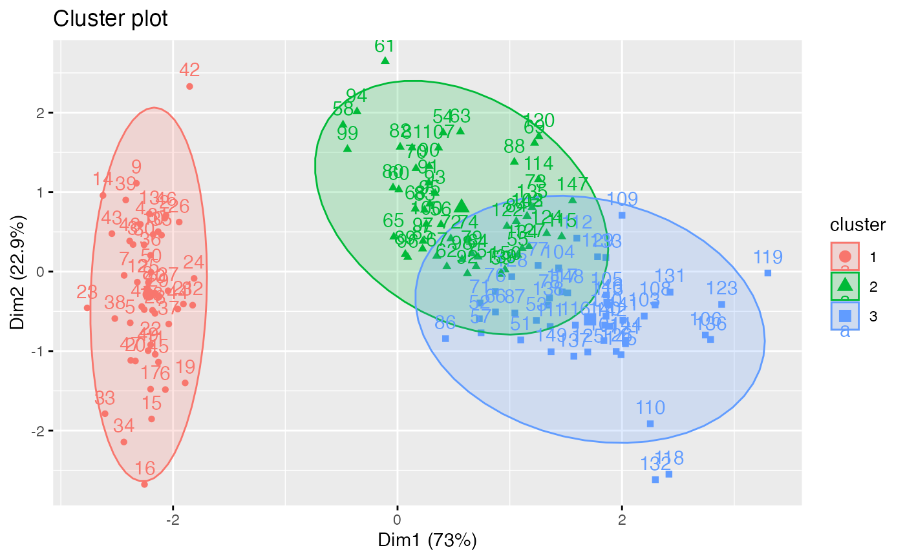

Provides ggplot2-based elegant visualization of partitioning methods including kmeans [stats package]; pam, clara and fanny [cluster package]; dbscan [fpc package]; Mclust [mclust package]; HCPC [FactoMineR]; hkmeans [factoextra]. Observations are represented by points in the plot, using principal components if ncol(data) > 2. An ellipse is drawn around each cluster.
fviz_cluster(
object,
data = NULL,
choose.vars = NULL,
stand = TRUE,
axes = c(1, 2),
geom = c("point", "text"),
repel = FALSE,
show.clust.cent = TRUE,
ellipse = TRUE,
ellipse.type = "convex",
ellipse.level = 0.95,
ellipse.alpha = 0.2,
shape = NULL,
pointsize = 1.5,
labelsize = 12,
main = "Cluster plot",
xlab = NULL,
ylab = NULL,
outlier.color = "black",
outlier.shape = 19,
outlier.pointsize = pointsize,
outlier.labelsize = labelsize,
ggtheme = theme_grey(),
...
)Arguments
- object
an object of class "partition" created by the functions pam(), clara() or fanny() in cluster package; "kmeans" [in stats package]; "dbscan" [in fpc package]; "Mclust" [in mclust]; "hkmeans", "eclust" [in factoextra]. Possible value are also any list object with data and cluster components (e.g.: object = list(data = mydata, cluster = myclust)).
- data
the data that has been used for clustering. Required only when object is a class of kmeans or dbscan.
- choose.vars
a character vector containing variables to be considered for plotting.
- stand
logical value; if TRUE, data is standardized before principal component analysis
- axes
a numeric vector of length 2 specifying the dimensions to be plotted.
- geom
a text specifying the geometry to be used for the graph. Allowed values are the combination of c("point", "text"). Use "point" (to show only points); "text" to show only labels; c("point", "text") to show both types.
- repel
a boolean, whether to use ggrepel to avoid overplotting text labels or not. The old
jitterargument is kept for backward compatibility and is silently converted torepel = TRUE.- show.clust.cent
logical; if TRUE, shows cluster centers
- ellipse
logical value; if TRUE, draws outline around points of each cluster
- ellipse.type
Character specifying frame type. Possible values are 'convex', 'confidence' or types supported by
stat_ellipseincluding one of c("t", "norm", "euclid").- ellipse.level
the size of the concentration ellipse in normal probability. Passed for
ggplot2::stat_ellipse's level. Ignored in 'convex'. Default value is 0.95.- ellipse.alpha
Alpha for frame specifying the transparency level of fill color. Use alpha = 0 for no fill color.
- shape
the shape of points.
- pointsize
the size of points
- labelsize
font size for the labels
- main
plot main title.
- xlab, ylab
character vector specifying x and y axis labels, respectively. Use xlab = FALSE and ylab = FALSE to hide xlab and ylab, respectively.
- outlier.pointsize, outlier.color, outlier.shape, outlier.labelsize
arguments for customizing outliers, which can be detected only in DBSCAN clustering.
- ggtheme
function, ggplot2 theme name. Default value is theme_pubr(). Allowed values include ggplot2 official themes: theme_gray(), theme_bw(), theme_minimal(), theme_classic(), theme_void(), ....
- ...
other arguments to be passed to the functions
ggscatterandggpar.
Value
return a ggpplot.
See also
Examples
set.seed(123)
# Data preparation
# +++++++++++++++
data("iris")
head(iris)
#> Sepal.Length Sepal.Width Petal.Length Petal.Width Species
#> 1 5.1 3.5 1.4 0.2 setosa
#> 2 4.9 3.0 1.4 0.2 setosa
#> 3 4.7 3.2 1.3 0.2 setosa
#> 4 4.6 3.1 1.5 0.2 setosa
#> 5 5.0 3.6 1.4 0.2 setosa
#> 6 5.4 3.9 1.7 0.4 setosa
# Remove species column (5) and scale the data
iris.scaled <- scale(iris[, -5])
# K-means clustering
# +++++++++++++++++++++
km.res <- kmeans(iris.scaled, 3, nstart = 10)
# Visualize kmeans clustering
# use repel = TRUE to avoid overplotting
fviz_cluster(km.res, iris[, -5], ellipse.type = "norm")

# Change the color palette and theme
fviz_cluster(km.res, iris[, -5],
palette = "Set2", ggtheme = theme_minimal())
 if (FALSE) { # \dontrun{
# Show points only
fviz_cluster(km.res, iris[, -5], geom = "point")
# Show text only
fviz_cluster(km.res, iris[, -5], geom = "text")
# PAM clustering
# ++++++++++++++++++++
require(cluster)
pam.res <- pam(iris.scaled, 3)
# Visualize pam clustering
fviz_cluster(pam.res, geom = "point", ellipse.type = "norm")
# Hierarchical clustering
# ++++++++++++++++++++++++
# Use hcut() which compute hclust and cut the tree
hc.cut <- hcut(iris.scaled, k = 3, hc_method = "complete")
# Visualize dendrogram
fviz_dend(hc.cut, show_labels = FALSE, rect = TRUE)
# Visualize cluster
fviz_cluster(hc.cut, ellipse.type = "convex")
} # }
if (FALSE) { # \dontrun{
# Show points only
fviz_cluster(km.res, iris[, -5], geom = "point")
# Show text only
fviz_cluster(km.res, iris[, -5], geom = "text")
# PAM clustering
# ++++++++++++++++++++
require(cluster)
pam.res <- pam(iris.scaled, 3)
# Visualize pam clustering
fviz_cluster(pam.res, geom = "point", ellipse.type = "norm")
# Hierarchical clustering
# ++++++++++++++++++++++++
# Use hcut() which compute hclust and cut the tree
hc.cut <- hcut(iris.scaled, k = 3, hc_method = "complete")
# Visualize dendrogram
fviz_dend(hc.cut, show_labels = FALSE, rect = TRUE)
# Visualize cluster
fviz_cluster(hc.cut, ellipse.type = "convex")
} # }